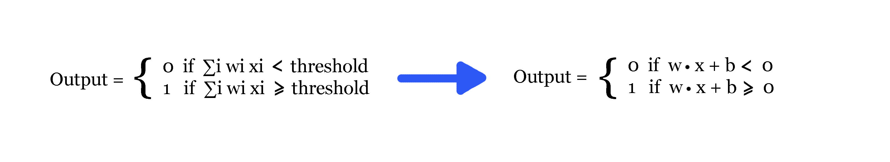
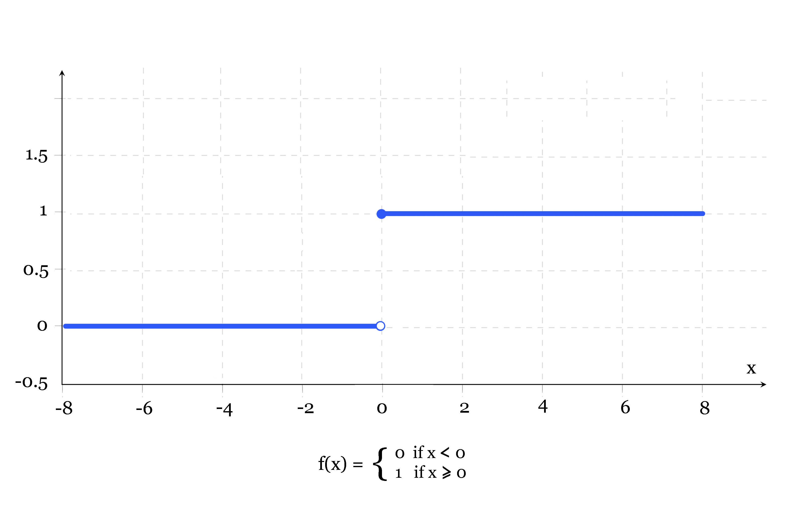
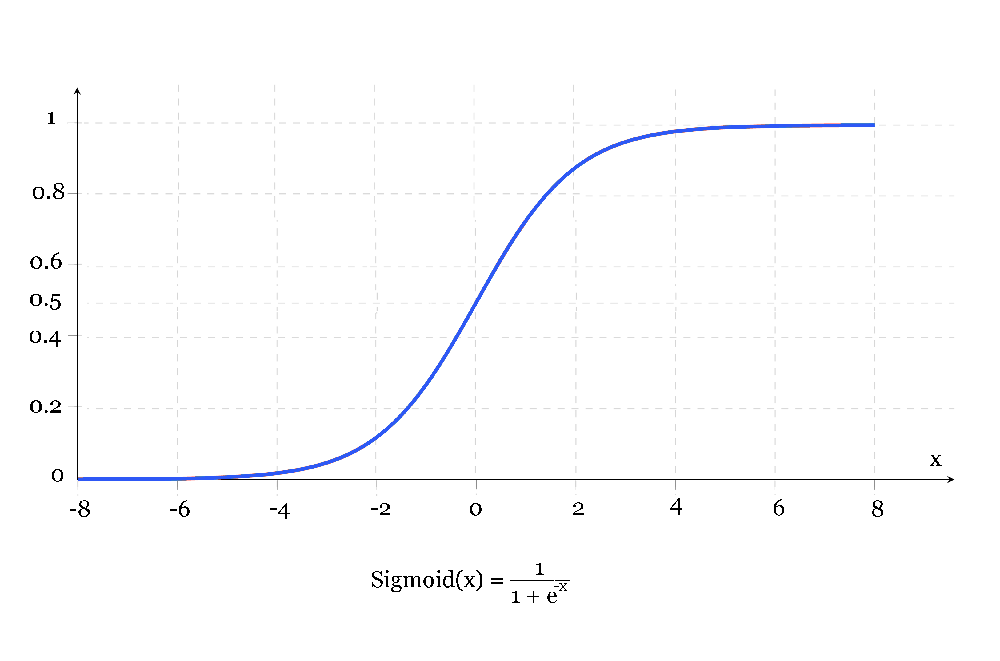

In the previous section we had a look at what a perceptron looks like, how it receives inputs, applies a linear combination, and if that linear combination is greater than or less than some threshold, an output of 0 or 1 is produced respectively. In order to make things simpler for training purposes, a few changes need to be made to our perceptron. Firstly, the threshold is normally moved to the other side of the inequality and renamed as the neuron’s bias, b ≡ − threshold. Secondly, ∑i wi xi is generally rewritten as a dot product, w ⋅ x ≡∑i wi xi, where W and X are vectors comprised of weights and inputs respectively. These changes are illustrated below:
The best way to think of the bias is how easy it is to get the neuron to output a 1. The bigger the bias, the easier it is for the neuron to output a 1 (fire if you will) , however, if the bias is very negative, then it is difficult for the perceptron to output a 1. The formula above is simply another way of describing the activation function we saw in the last section, the Heaviside step function:
This is just one of several activation functions used in deep learning, it is also the simplest. Other activation functions include the Sigmoid, ReLu, Tanh, Linear, and Softmax functions, each with their own specialised purpose. Given our current problem of handwritten number recognition, suppose we have a network of perceptrons that we’d like to use in order to solve this problem. Ideally, we’d like the network to learn weights and biases so that the output from the network correctly classifies the input number. In order to make learning possible we’d like for some small change in either a weight or bias to cause only a small corresponding change in the final output. For example, suppose the network was mistakenly classifying an image of a “7” as a “1”. We could figure out how to make a small change in the weights and biases so that the network gets a little closer to classifying the image as a “7”. We would then repeat this over and over to produce an increasingly accurate output. This would be the network learning.
Unfortunately, this isn’t what happens when our network is composed of perceptrons. In fact, a small change to the weights or bias of any single perceptron can cause the output of that perceptron to completely flip, from 0 to 1 or vise versa. Such a flip may then cause the behaviour of the rest of the network to drastically change in a chaotic cascading manner. So while the “7” might now be classified correctly, all other inputs are likely to produce completely different results. As a result, it is difficult to see how we can gradually modify weights and biases to approach the desired behaviour. It turns out we can overcome this problem by simply modifying our perceptrons to create a new type of artificial neuron called a sigmoid neuron. The only difference between them is that a perceptron uses the Heaviside step function, whereas, a sigmoid neuron uses the Sigmoid function. So what’s the difference between the two activation functions? Simply put, the sigmoid function is a continuous function, allowing inputs/outputs between 0 and 1, unlike the the Heaviside step function which only accepts 0 or 1. Below is a Sigmoid function:
What advantage does this continuity offer? Well for a start it means that the output can be considered as a probability of success, or a yes. For example, an output of 0.5 means the network “has no idea” whether it’s a yes or no, while an output of 0.8 means the network is “pretty sure” it’s a yes. As it turns out, this feature is particularly important if you want the network to be able to learn.